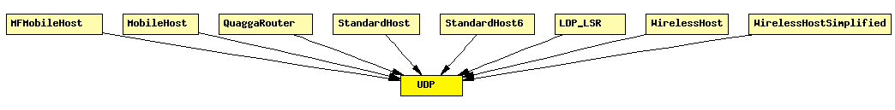

File: Transport/UDP/UDP.ned
C++ definition: click here
UDP protocol implementation, for IPv4 and IPv6.
The UDP protocol header is represented by the class UDPPacket.
Communication with clients (applications)
The module can (should) be connected to several applications. For sending an UDP packet, the application should attach an UDPControlInfo object to the payload, and send it to UDP. UDP will also attach an UDPControlInfo object to any payload message in sends up to the application.
For receiving UDP packets, the connected applications should first "bind" to the given UDP port. This can be done by sending an arbitrary message with message kind UDP_C_BIND and an UDPControlInfo attached with srcPort filled in.
If there is only one app which doesn't bind to any port, it will receive all packets.
Communication with the IP (IPv4/IPv6) layer
The UDP model relies on sending and receiving IPControlInfo/IPv6ControlInfo objects attached to UDPPacket objects as control info (see cMessage::setControlInfo()).
See also: UDPPacket, UDPControlInfo, UDPCommandCode
The following diagram shows usage relationships between modules, networks and channels. Unresolved module (and channel) types are missing from the diagram. Click here to see the full picture.
If a module type shows up more than once, that means it has been defined in more than one NED file.
| MFMobileHost | Models a mobile host with a wireless (802.11b) card in ad-hoc mode. This model contains the Mobility Framework's 802.11 implementation, Nic80211, and IP, TCP and UDP protocols. The mobility model can be dynamically specified with the mobilityType parameter. |
| MobileHost | Models a mobile host with a wireless (802.11b) card in ad-hoc mode. This model contains the new IEEE 802.11 implementation, Ieee80211Nic, and IP, TCP and UDP protocols. The mobility model can be dynamically specified with the mobilityType parameter. |
| QuaggaRouter | Quagga-based IP router. |
| StandardHost | |
| StandardHost6 | |
| LDP_LSR | An LDP-capable router. |
| WirelessHost | Models a host with one wireless (802.11b) card in infrastructure mode. This module is basically a StandardHost with an Ieee80211NicSTA added. It should be used in conjunction with WirelessAP, or any other AP model which contains Ieee80211NicAP. |
| WirelessHostSimplified | Models a host with one wireless (802.11b) card in infrastructure mode, but using a simplified NIC that does not support handovers. This module is basically a StandardHost with an Ieee80211NicSTASimplified added. It should be used in conjunction with WirelessAPSimplified, or any other AP model which contains Ieee80211NicAPSimplified. |
| Name | Direction | Description |
|---|---|---|
| from_app [ ] | input | |
| from_ip | input | |
| from_ipv6 | input | |
| to_app [ ] | output | |
| to_ip | output | |
| to_ipv6 | output |
simple UDP gates: in: from_app[]; in: from_ip; in: from_ipv6; out: to_app[]; out: to_ip; out: to_ipv6; endsimple